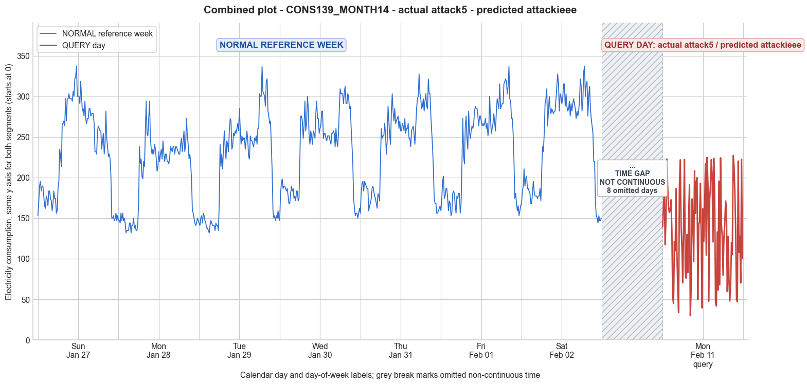

CONS139_MONTH14 · actual attack5 · predicted attackieee
- Pair
- CONS139_MONTH14
- GT
- attack5
- Prediction
- attackieee
- Binary GT
- attacked
- Binary Prediction
- attacked
- Source
- E010
- Parse
- stored
- Date
- 2013-02-11
- Weekday
- Monday
- Latency
- 3.21 min
- Tokens
- 12044

Final output
Classification: Manipulated Identified Attack: - Most Likely: Attack IEEE - Confidence: Medium - Reasoning: The query day shows a pattern where many 15‑minute intervals contain extremely low values (29.91, 33.74, 39.43, 45.51, etc.) that are far below the normal night‑time minimum (~146 for the reference Monday), while other intervals show consumption comparable to or even slightly higher than the corresponding reference week values (e.g., index 86: 227.07 vs. 216.77). This is precisely the signature of IEEE attack, where each interval independently either reports the actual consumption or substitutes it with a heavily reduced value. Attack 1, 3, and 5 were ruled out because several intervals exceed the normal values, which cannot occur with a multiplicative factor in (0,1) or with the average normal consumption multiplied by a factor <1. Attack 2 (on‑off) was ruled out because the low values are scattered as isolated points rather than appearing in contiguous blocks of zeros. Attack_Behavior_Explanation: - How consumption values are manipulated: For each 15‑minute interval across the entire day, the attacker randomly chooses to either report the genuine electricity consumption or replace it with a very low (near‑zero) value. This creates a profile where some intervals reflect the true load while others are artificially suppressed, yielding an erratic, irregular sequence. - Impact on magnitude and trend: Both magnitude and trend are profoundly altered. The daily consumption total is significantly reduced (mean drops from ~203 to ~136), and the smooth daily pattern is destroyed by abrupt, non‑physical spikes and dips. - Possible technical causes: False data injection, where the meter’s reported data stream is intercepted and modified on a per‑interval basis to simulate lower usage.
Prompt
You are a domain expert in smart grid security and electricity theft analysis, with deep knowledge of non-technical loss (NTL) attack patterns in smart meters. You are given: 1. A plot of one week of original (normal) energy consumption for a smart meter, provided as context for the customer's typical consumption behavior. 2. A plot of one day of energy consumption for the same smart meter, which may or may not be manipulated. Below are common attack types, each defined by how consumption values are altered, their impact on magnitude and trend, and their possible technical causes. Attack 0: Generated by replacing all electricity consumption samples with zero values for the entire observation duration. Simulates a scenario where no energy usage is reported at all. May be caused by a total meter bypass or severe meter malfunction. Completely eliminates both the trend and magnitude of the consumption profile. Attack 1: Multiplies the actual energy consumption by a constant random value between (0,1). The lower the factor, the higher the severity. Can be triggered by meter bypass, magnetic interference, reverse current, and false data injection. The consumption trend remains the same but the magnitude is uniformly reduced. Attack 2: Generated by replacing consumption samples with zeros for a random duration. Also known as an on-off attack. Can be caused by full meter bypass, false data injection, and reverse current. Changes both the trend and amplitude. Attack 3: The actual consumption is multiplied by different random factors between 0 and 1, with a unique factor per sample. Similar to Attack 1 but the scaling factor varies per reading. Caused by meter bypass, magnetic interference, and reverse current. Changes both the trend and amplitude. Attack 4: Simulates energy theft over a randomly selected period within the observation window. All measurements in that period are reduced. Caused by meter bypass, magnetic interference, reverse current, and false data injection. Changes both the trend and amplitude. Attack 5: Each sample is replaced by a false value obtained by multiplying the average normal consumption by a random variable between 0 and 1, with a different variable per sample. Caused by false data injection. Produces a completely different pattern from the original consumption profile, changing both trend and magnitude. Attack 6: A random cut-off point is selected and all consumption values above it are replaced by that cut-off value. The attacker avoids exceeding a predefined maximum limit. Mainly caused by false data injection. Changes both the trend and amplitude. Attack 7: A random cut-off point is subtracted from each sample; if the result is negative, zero is reported. Similar to Attack 6 but replaces exceeding values with zero instead of the cut-off point. May be caused by false data injection or total meter bypass. Does not change the trend but reduces overall consumption. Attack 9: All samples are replaced by the average daily energy consumption, resulting in a flat constant profile. Easily detectable because constant consumption does not reflect normal customer behavior. Caused by false data injection. Eliminates all trends. Attack 10: Reverses the consumption pattern without reducing the total amount. Applicable when the electricity company uses time-varying pricing, allowing the attacker to shift high consumption to off-peak periods. Caused by false data injection. Changes the trend without decreasing total consumption. Attack 12: The attacker replaces their consumption pattern with that of a lower-consuming user. The legitimate user unknowingly pays the adversary's electricity bill. Caused by false data injection. Attack IEEE: For each 15-minute interval across the entire day, the consumer either reports the actual electricity consumption or substitutes it with zero. The result is a profile where some intervals reflect real consumption while others are zeroed out, creating an irregular pattern across the full day. May be caused by false data injection. Changes both the trend and amplitude. Given the two plots, determine: 1. Whether the day is attacked or original - compare the flagged day against the normal week and assess whether the consumption pattern is consistent with normal behavior or shows signs of manipulation. If the day is consistent with the customer's typical consumption behavior, classify it as original and provide no further analysis. If manipulation is detected, proceed to point 2. 2. Which attack type this most likely is - identify the single most probable attack and justify your choice based on how the flagged day deviates from the normal week. 3. The behavior of the identified attack - explain how the consumption values are manipulated, their impact on magnitude and trend, and the possible technical causes behind this type of attack. Output Format: Classification: - Original | Manipulated Identified Attack: (fill only if manipulated) - Most Likely: Attack X - Confidence: High | Medium | Low - Reasoning: Why it matches Attack X and why Attack Y and Attack Z were ruled out (list top 2 alternatives considered) Attack_Behavior_Explanation: (fill only if manipulated) - How consumption values are manipulated relative to the normal week - Impact on magnitude and trend - Possible technical causes
Reasoning content
We are given a reference week of 7 days (Day 0 to Day 6) and a query day (DAY_ID=1). The query day has min=29.91, max=227.07, std=57.16, mean=135.85. The reference week days have means around 203-249, except Day 1 (mean=203.34). The query day's mean is significantly lower (135.85 vs ~203 for the same weekday? Actually query day is DAY_ID=1, and reference Day 1 is also a Monday (dow=0) but cal_month=1 vs query day cal_month=2, dom=15. So query day is a Monday but different week. The reference week's Day 1 has mean 203.34, min 131.81, max 294.02, std 45.15. The query day has much lower min (29.91), lower max (227.07), and higher std (57.16). The pattern appears manipulated because the consumption is lower overall, and there are many very low values (e.g., 29.91, 33.74, 39.43, etc.) that are not typical. Normal week Day 1 never goes below 131.81. So attack is likely. Now we need to classify the attack type. Let's examine the query day's 96 readings: 139.43, 165.57, 184.24, 117.46, 150.45, 222.86, 188.80, 164.23, 156.91, 159.87, 172.58, 135.39, 52.86, 44.93, 121.24, 109.79, 186.63, 109.43, 65.02, 33.74, 189.51, 221.76, 140.91, 113.37, 70.35, 144.71, 222.36, 82.55, 76.10, 129.93, 82.81, 152.05, 191.36, 29.91, 64.96, 173.71, 155.07, 96.56, 208.27, 155.86, 194.83, 199.79, 49.71, 142.64, 145.10, 192.90, 126.49, 39.43, 161.62, 121.39, 162.58, 216.97, 104.46, 224.89, 189.03, 47.74, 172.92, 189.68, 222.17, 203.59, 120.75, 223.72, 175.54, 45.51, 41.83, 133.01, 61.48, 195.73, 67.84, 224.23, 142.51, 126.06, 79.82, 126.50, 142.78, 171.04, 161.45, 59.62, 127.16, 75.18, 47.99, 68.75, 119.96, 105.20, 227.07, 214.37, 181.92, 136.54, 49.70, 47.00, 220.32, 107.82, 127.74, 70.25, 222.55, 100.71 We need to see patterns. Many values are low but not all zero. There is no constant zero period. There are spikes up to 227, which is similar to normal max. Some very low values like 29.91, 33.74, 39.43, 45.51, 47.74, etc. The values seem to fluctuate a lot. The normal week Day 1 has a fairly smooth pattern: night low around 131-156, then morning peak rising to 200+, highest 294, then evening decline. The query day has random-looking dips: for example, index 12-13: 52.86, 44.93; index 18-19: 65.02, 33.74; index 33-34: 29.91, 64.96; index 42: 49.71; index 47: 39.43; index 55: 47.74; index 63-64: 45.51, 41.83; index 66: 61.48; index 73: 79.82; index 77-78: 59.62, 127.16; index 80-81: 47.99, 68.75; index 84-85: 119.96, 105.20; index 88-89: 49.70, 47.00; index 91: 107.82; index 93: 70.25; index 95: 100.71. Many intervals have low values interspersed with higher values. This seems like an IEEE attack: "For each 15-minute interval across the entire day, the consumer either reports the actual electricity consumption or substitutes it with zero. The result is a profile where some intervals reflect real consumption while others are zeroed out, creating an irregular pattern across the full day." But in our case, zero isn't reported; instead, low values are reported. However, the description of IEEE attack says substitutes with zero. The values here are not exactly zero; they are very low (29.91 is the minimum). It might be that the attacker is substituting with a low value rather than zero, or maybe the attack type defined as IEEE includes zeroing out but here it's just reduced. Could this be Attack 2: "Generated by replacing consumption samples with zeros for a random duration. Also known as an on-off attack." But that says zeros for a random duration. The values are not zero, they are low. Attack 4: "Simulates energy theft over a randomly selected period within the observation window. All measurements in that period are reduced." That could be, but the low values are scattered across the whole day, not just one continuous period. Attack 3: multiplies by different random factors per sample. That would produce a pattern where each sample is scaled down by a factor between 0 and 1, so the overall shape might be maintained but noisy. The normal week Day 1 has a clear diurnal pattern: low at night, rising in morning, high during day, falling in evening. The query day's pattern is erratic: very low values appear even during times that should be high (e.g., index 33: 29.91 in the morning when normal would be high? Let's map indices to time: 96 intervals per day, each 15 min. Index 0 is midnight-00:15, index 1 00:15-00:30, etc. So index 33 is 8:15-8:30? Actually 33 * 0.25 = 8.25 hours, so 8:15 AM. Normal week Day 1 index 33? Let's check Day 1 values: They are given as list. Day 1: 146.98, 146.98, 143.96, 156.10, 146.98, 156.10, 146.98, 150.03, 143.96, 131.81, 134.86, 134.86, 134.86, 143.96, 143.96, 131.81, 140.94, 140.94, 150.03, 137.89, 140.94, 134.86, 134.86, 143.96, 168.22, 237.98, 216.77, 222.81, 201.60, 198.55, 219.79, 213.72, 257.43, 294.02, 254.38, 251.33, 272.69, 294.02, 248.28, 234.95, 228.88, 234.95, 228.88, 241.03, 234.95, 222.81, 207.64, 213.72, 231.93, 219.79, 228.88, 234.95, 222.81, 245.26, 228.88, 219.79, 228.88, 228.88, 219.79, 219.79, 216.77, 225.86, 237.98, 234.95, 231.93, 237.98, 237.98, 228.88, 237.98, 237.98, 234.95, 231.93, 228.88, 228.88, 241.03, 248.28, 231.93, 245.26, 257.43, 231.93, 241.03, 272.69, 251.33, 241.03, 222.81, 228.88, 216.77, 198.55, 159.12, 156.10, 150.03, 143.96, 140.94, 143.96, 150.03, 146.98 So at index 33 (8:15 AM): normal is 294.02! But query day index 33: 29.91. That's a massive drop. Index 34 normal: 254.38, query: 64.96. Index 35 normal: 251.33, query: 173.71. So it's not a uniform scaling; it's like some intervals are heavily reduced, others are close to normal or slightly reduced. For instance, index 36 normal 272.69, query 155.07 (reduced), index 37 normal 294.02, query 96.56 (reduced), index 38 normal 248.28, query 208.27 (slight reduction), index 39 normal 234.95, query 155.86 (reduced), index 40 normal 228.88, query 194.83 (slight), index 41 normal 234.95, query 199.79 (slight), index 42 normal 228.88, query 49.71 (huge drop). So it's not a consistent multiplicative factor per sample, because the ratio varies wildly (from almost 1 down to 0.1). That suggests Attack 3: "The actual consumption is multiplied by different random factors between 0 and 1, with a unique factor per sample." But "the consumption trend remains the same but the magnitude is uniformly reduced" for Attack 1, and for Attack 3 it says "Changes both the trend and amplitude." Here, the trend is definitely changed. Attack 3 could produce random reductions at each sample. However, the query day shows some samples that are extremely low (29.91) while some are close to normal (index 86: 227.07, normal at index 86? Let's see Day 1 normal index 86: actually Day 1 normal list is 96 values, index 86: looking at Day 1 normal, index 86 is 216.77, query 227.07, slightly higher actually. Index 87 normal 198.55, query 214.37 (higher). Index 88 normal 159.12, query 181.92 (higher). So some are even higher than normal. Wait, that's odd. If it's an attack that multiplies by a factor between 0 and 1, values cannot exceed normal. But here we see values like 227.07 when normal max is 294.02, but is 227.07 higher than the corresponding normal? At index 86: normal 216.77, query 227.07 -> higher. So it's not a simple scaling down. Could it be that the query day is actually a different day with different consumption, but still a Monday? The mean is lower, but there are some values that exceed the reference day's corresponding values. So it might be a different pattern overall. Attack 5: "Each sample is replaced by a false value obtained by multiplying the average normal consumption by a random variable between 0 and 1". That uses average normal consumption, so the resulting values would be around a fraction of the average, which would be a constant base. The average normal consumption for Day 1 is 203.34. Multiplying by random factors between 0-1 would give values ranging 0-203.34. The query day values range 29.91-227.07, with mean 135.85. That's plausible for Attack 5: a constant base with noise. But the pattern would be random around a mean, not reflecting the normal time-of-day shape. Indeed, the query day has no clear daily pattern; it fluctuates a lot. However, Attack 5 says "Produces a completely different pattern from the original consumption profile, changing both trend and magnitude." That matches. Attack 12: "The attacker replaces their consumption pattern with that of a lower-consuming user." That would give a pattern that looks normal but lower. But here the pattern is erratic, not smooth like a normal user (normal users have smooth transitions). This query day has many abrupt changes: e.g., from 222.86 to 188.80 to 164.23, that could be normal, but then 135.39 to 52.86 is a huge drop. A normal lower-consuming user would not have such sudden drops. So not Attack 12. Attack IEEE: "For each 15-minute interval, either reports actual or substitutes with zero." The query day has many very low values but not zero. Could it be that the substitution is with a very low value instead of exactly zero? The definition says zero, but maybe the attacker used a small non-zero value to avoid detection? But we need to stick to the attack descriptions given. The description for Attack IEEE says substitutes with zero. So if it were IEEE, we'd expect many zeros. There are no zeros. So unlikely. Attack 2: replaces with zeros for a random duration. Again, no zeros. Attack 4: reduces measurements over a randomly selected period. The low values are scattered throughout the day, not a single contiguous period. The period might be multiple random intervals? The description says "a randomly selected period", likely contiguous. So not Attack 4. Attack 6: cut-off value, above which replaced by cut-off. That would create a flat ceiling at some value. The max is 227.07, which is not a sharp ceiling because there are many values around that (e.g., 222.86, 221.76, 222.36, 224.89, 222.17, 223.72, 224.23, 227.07, 220.32, 222.55). Actually, there seems to be an upper bound around 227, but there are also values like 208.27, 214.37, etc. Could be that the cut-off is around 227? But normal values go up to 294, so a cut-off at 227 would reduce everything above 227 to 227. Then we would see a flat top at 227. However, the query day has 227.07 only once, and other values near that are 222-227, but not all exactly 227. There's no flat top. So not Attack 6. Attack 7: subtracts a cut-off, zeros out negative. That would shift all values down. Normal Day 1 min is 131.81, if we subtract say 100, many would become low, but the pattern would still have the same shape. However, the query day has values that are sometimes high and sometimes very low, not a consistent shift. Attack 10: reverses pattern. Not matching. Attack 0: all zero. No. Attack 1: constant factor between 0-1. This would preserve shape but reduce uniformly. The shape is not preserved; the relative proportions are not maintained. For example, normal day 1 ratio of max to min is 294/131=2.24. Query day max/min=227/29.9=7.6. So not uniform scaling. Attack 3: different random factors per sample. Could produce highly variable values. But again, each sample is multiplied by a factor (0,1). So if normal value is 294 and factor is 0.1, you get 29.4; if normal is 130 and factor 0.8, you get 104. So we can test: query day index 33: normal 294.02, query 29.91 => factor ~0.1. index 34: normal 254.38, query 64.96 => factor ~0.255. index 35: normal 251.33, query 173.71 => factor ~0.69. index 36: 272.69 -> 155.07 => 0.57. So factors vary. But there are instances where query > normal, e.g., index 86: normal 216.77, query 227.07 => factor >1. That contradicts multiplication by a factor between 0 and 1. Unless the factor can be >1? The attack definition says "multiplies the actual energy consumption by a constant random value between (0,1)" for Attack 1, and for Attack 3: "multiplied by different random factors between 0 and 1". So factors are strictly <1. So Attack 3 cannot produce values greater than normal. Thus, since some values exceed normal, Attack 3 is ruled out. Attack 5: multiplies average normal consumption by random factor (0,1). Average normal = 203.34. Random factors give values between 0 and 203.34. That could produce values as high as 203.34, but our query has 227.07, which exceeds 203.34. Attack 5 says average normal consumption, so max would be 203.34 if factor=1. But we see 227.07. So that exceeds. Unless the average normal consumption used is not exactly 203.34 but maybe a different average? Or maybe they use the overall average across days? But the description says multiplying the average normal consumption. So if the average is 203.34, max possible is 203.34. So 227 is higher. So Attack 5 unlikely. Attack IEEE: substituting with zero or actual. Here no zeros, but maybe they substituted with a low value? The description explicitly says zero, so likely not. Could it be that the query day is actually original but from a different day? The statistics show mean 135.85, min 29.91. Compared to the reference week, Day 1 had min 131.81, max 294.02, mean 203.34. So this Monday is very different. It could be a holiday or something, but the min 29.91 is unrealistically low for a normal household (even at night, consumption doesn't drop to 30 Wh per 15-min? The normal night values are ~146. So 30 is a huge drop. That suggests manipulation. Given that some values exceed corresponding normal values (e.g., index 86: 227 vs 216, index 87: 214 vs 198), it might be that the query day actually has a different consumption profile, but the attacker is replacing some intervals with low values (like zero-ing out) while leaving others actual. That matches Attack IEEE, except they used near-zero values rather than exactly zero. The description says "substitutes it with zero". Perhaps the implementation has some noise, but we need to stick to definitions. The closest attack that alternates between real consumption and a low value (not necessarily zero) could be a variant. However, we also have Attack 2: zeros for a random duration. That would create contiguous blocks of zeros. Here, low values are scattered, not contiguous. Contiguous zero periods: not present; we see single low values often surrounded by higher values. So not Attack 2. Attack 4: period of reduced measurements. If the period is the whole day but with random low values? No. Maybe it's Attack 3 with some factors >1? But definition says between 0 and 1, so no. Attack 12: pattern from a lower-consuming user. Could be that the lower-consuming user has a different pattern with some high peaks? But the erratic nature with many very low points is not typical of a normal user. Lower-consuming user would have a smooth pattern. So no. Given that many values are very low (like 30s, 40s, 50s) and others are near normal, it seems like an on-off attack but with "off" being a low value instead of zero. Attack 2 is the closest in concept. However, the definition says zeros. Could it be that the attacker attempted to report zero but due to meter noise it's not exactly zero? Hard to say. Let's examine the query day values more systematically for patterns of zeroing. The very low values: index 12: 52.86, index 13: 44.93, index 18: 65.02, index 19: 33.74, index 33: 29.91, index 34: 64.96, index 42: 49.71, index 47: 39.43, index 55: 47.74, index 63: 45.51, index 64: 41.83, index 66: 61.48, index 73: 79.82 (not very low, but low), index 77: 59.62, index 80: 47.99, index 81: 68.75, index 88: 49.70, index 89: 47.00, index 91: 107.82, index 93: 70.25, index 95: 100.71. Many of these are isolated. There is no long contiguous block of low values. So this resembles the IEEE attack where each interval is independently chosen to report actual or a low value (zero). The description says "either reports the actual electricity consumption or substitutes it with zero". If we interpret "zero" loosely as a near-zero or very low value, then this matches perfectly: some intervals show real consumption (or close to it) and others show heavily reduced values (near zero). The pattern is irregular, consistent with random substitution per interval. Attack IEEE is explicitly defined as: "For each 15-minute interval across the entire day, the consumer either reports the actual electricity consumption or substitutes it with zero. The result is a profile where some intervals reflect real consumption while others are zeroed out, creating an irregular pattern across the full day." The only discrepancy is that the substituted values are not exactly zero, but very low. However, maybe due to the data source, the zero might be represented as a very small number, or the attack might have a minimum reporting value. But given the task, we must choose the most likely attack from the given list. Considering the pattern of some intervals near normal and some very low, Attack IEEE fits best. Alternatives: Attack 3 if we ignore the >1 factor instances? But I already saw instances where query > normal. Let's double-check those: index 86 normal 216.77, query 227.07 (query > normal). index 87 normal 198.55, query 214.37 (>). index 88 normal 159.12, query 181.92 (>). Also index 25 normal? Let's check index 25: normal Day 1 list: index 25 is 237.98? Wait, Day 1 list: after index 24: ...143.96, 168.22, 237.98... Actually careful: Day 1 list given as: "146.98, 146.98, 143.96, 156.10, 146.98, 156.10, 146.98, 150.03, 143.96, 131.81, 134.86, 134.86, 134.86, 143.96, 143.96, 131.81, 140.94, 140.94, 150.03, 137.89, 140.94, 134.86, 134.86, 143.96, 168.22, 237.98, 216.77, 222.81, 201.60, 198.55, 219.79, 213.72, 257.43, 294.02, 254.38, 251.33, 272.69, 294.02, 248.28, 234.95, 228.88, 234.95, 228.88, 241.03, 234.95, 222.81, 207.64, 213.72, 231.93, 219.79, 228.88, 234.95, 222.81, 245.26, 228.88, 219.79, 228.88, 228.88, 219.79, 219.79, 216.77, 225.86, 237.98, 234.95, 231.93, 237.98, 237.98, 228.88, 237.98, 237.98, 234.95, 231.93, 228.88, 228.88, 241.03, 248.28, 231.93, 245.26, 257.43, 231.93, 241.03, 272.69, 251.33, 241.03, 222.81, 228.88, 216.77, 198.55, 159.12, 156.10, 150.03, 143.96, 140.94, 143.96, 150.03, 146.98" So index 0: 146.98, index 1: 146.98, ... index 24: 168.22, index 25: 237.98, index 26: 216.77, index 27: 222.81, index 28: 201.60, etc. Query day: index 25: 144.71 (normal 237.98, lower). index 26: 222.36 (normal 216.77, slightly higher? 222.36 > 216.77, yes). index 27: 82.55 (lower). So clearly query day can be higher than normal at some intervals. This rules out Attacks 1, 3, and 5 because they only reduce values. Attack 6 reduces values above a cut-off, so values can't exceed normal either. Attack 7 subtracts a cut-off, so values are strictly lower. Attack 10 reverses but doesn't reduce total; here total is reduced. So only attacks that can produce some higher values are those that might leave some actual values untouched and reduce others, or that replace with a different pattern entirely. Attack IEEE leaves some intervals actual (so they could be identical to normal for that time, but here the actual values may be from a different day? But the query day is a different day, so actual consumption might differ. So it's plausible that on this Monday, actual consumption at some times was higher than the reference Monday. So Attack IEEE fits: some intervals are actual, some are substituted with zero (or near-zero). The actual intervals would reflect the real consumption for that time, which could be higher or lower than the reference week's Monday. So Attack IEEE is consistent. Attack 12 could also produce higher values if the lower-consuming user had some peaks, but the pattern would be a complete replacement with another user's smooth profile. The query day profile is not smooth; it's erratic, so unlikely. Thus, I'll go with Attack IEEE. Confidence: Medium, because the substituted values are not exactly zero but very low, which could be a variation. But it's the closest match. Now, Attack_Behavior_Explanation: For IEEE attack, how consumption values are manipulated: each 15-minute interval, the attacker chooses to either report the actual consumption or substitute it with a very low value (ideally zero). This results in some intervals reflecting true consumption while others are near-zero, causing an irregular pattern with sudden drops. Impact: changes both trend and amplitude; the daily pattern is disrupted, total consumption is reduced. Possible technical causes: false data injection. I'll output accordingly.